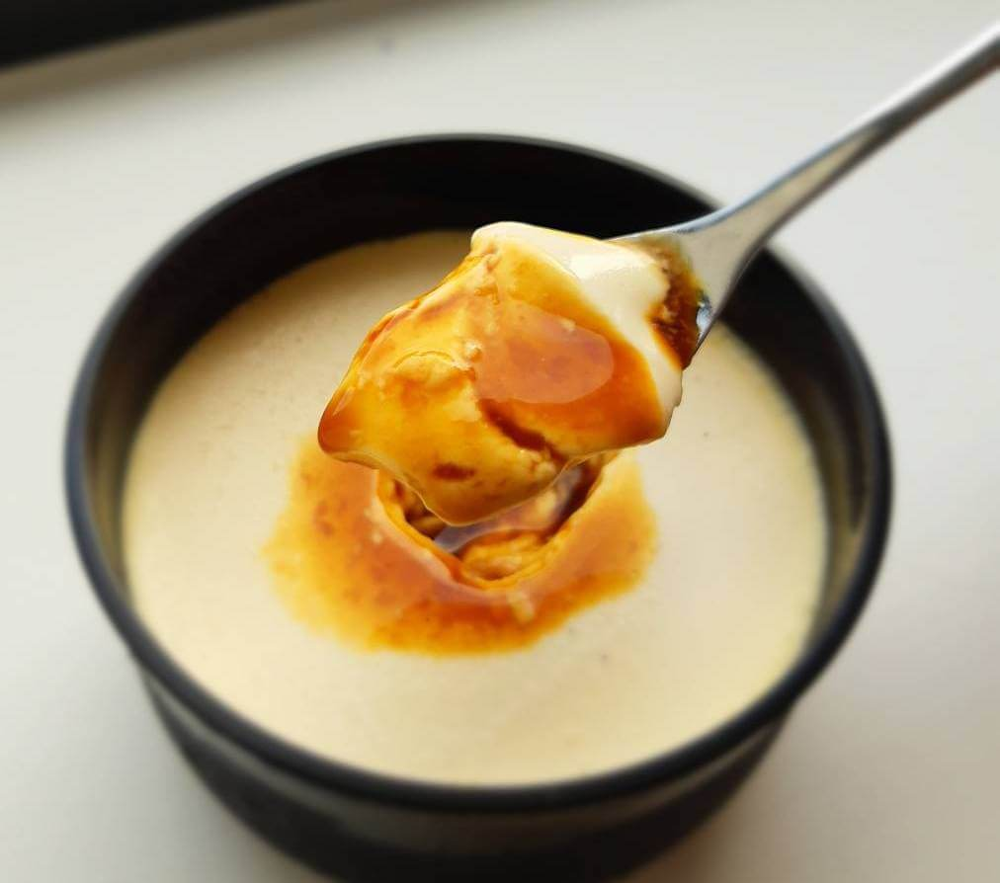
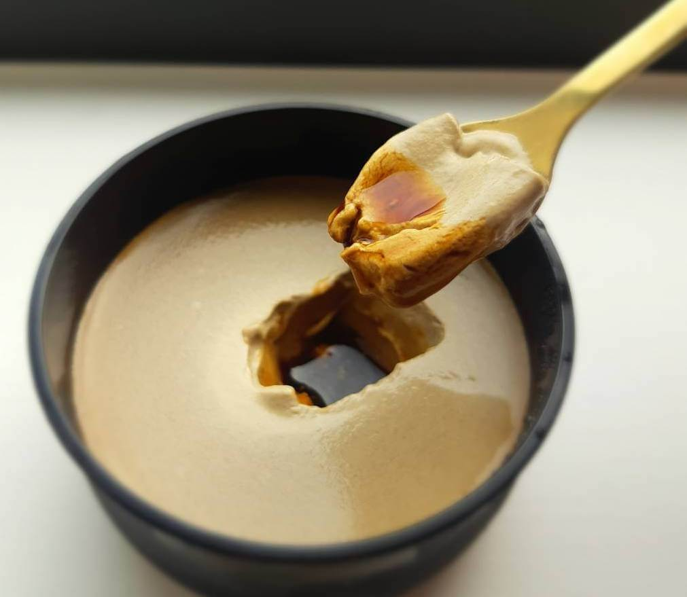
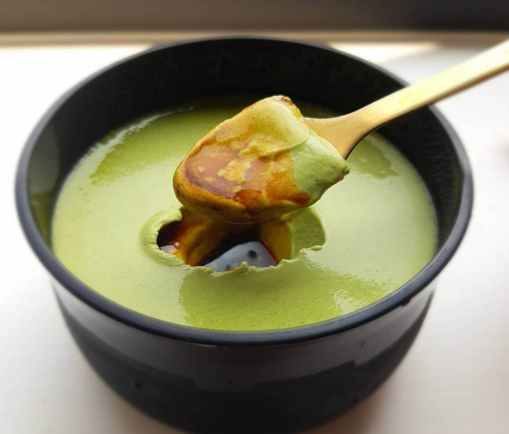

Rose Mai-Mai
螺絲麥麥手作布丁
我們立志做出最能撫慰人心的布丁
有別於一般的布丁
入口即化的雪溶口感
搭配上極黑苦焦糖
而這種苦是小朋友所不能吃的苦
非常適合嚐過人生酸苦滋味的你我他～

黑苦焦糖布丁

螺絲麥麥定番基本款
苦中帶點酸的焦糖，加上溶雪口感
非常適合嚐過人生酸苦滋味的你我他
營養標示
每一份量105±5公克
本包裝含1份
| 每份 | 每100公克 | |
|---|---|---|
| 熱量 | 211 大卡 | 201 大卡 |
| 蛋白質 | 4.2 公克 | 4 公克 |
| 脂肪 | 15.4 公克 | 14.7 公克 |
| 飽和脂肪 | 9.2 公克 | 8.8 公克 |
| 反式脂肪 | 0.4 公克 | 0.4 公克 |
| 碳水化合物 | 14 公克 | 13.3 公克 |
| 糖 | 13.9 公克 | 13.2 公克 |
| 鈉 | 46.2 毫克 | 44 毫克 |
＊反式脂肪來源為鮮奶油所含之天然乳源，不會造成健康危害，請放心食用哦～
極上焙茶布丁

雖說鹿耳島的焙茶最有名
但忍不住愛上了京都宇治的百年焙茶葉
入口久久不散的茶香
是店員A最愛的口味
營養標示
每一份量105±5公克
本包裝含1份
| 每份 | 每100公克 | |
|---|---|---|
| 熱量 | 207 大卡 | 197 大卡 |
| 蛋白質 | 4.1 公克 | 3.9 公克 |
| 脂肪 | 15.3 公克 | 14.6 公克 |
| 飽和脂肪 | 9.2 公克 | 8.8公克 |
| 反式脂肪 | 0.4 公克 | 0.4 公克 |
| 碳水化合物 | 13.1 公克 | 12.4 公克 |
| 糖 | 13 公克 | 12.4 公克 |
| 鈉 | 45.2 毫克 | 43 毫克 |
＊反式脂肪來源為鮮奶油所含之天然乳源，不會造成健康危害，請放心食用哦～
香醇芝麻布丁

使用日本極細芝麻粉
香醇細緻、傳統中帶點新穎的口味
是店員B最期待上市的口味
連不愛芝麻的人也會愛上 : )
營養標示
每一份量105±5公克
本包裝含1份
| 每份 | 每100公克 | |
|---|---|---|
| 熱量 | 234 大卡 | 222 大卡 |
| 蛋白質 | 4.7 公克 | 4.5 公克 |
| 脂肪 | 17.7 公克 | 16.9 公克 |
| 飽和脂肪 | 10.6 公克 | 10.1公克 |
| 反式脂肪 | 0.5 公克 | 0.5 公克 |
| 碳水化合物 | 13.8 公克 | 13.2 公克 |
| 糖 | 13.5 公克 | 12.8 公克 |
| 鈉 | 45.9 毫克 | 43.7 毫克 |
＊反式脂肪來源為鮮奶油所含之天然乳源，不會造成健康危害，請放心食用哦～
濃厚巧克布丁
未上市就熱銷的巧克力布丁
加入大量法國99%酸苦黑巧克力
濃厚的生巧克力慕斯口感，適合老饕們
~ 另有隱藏酒精版可洽詢 ~
營養標示
每一份量85±5公克
本包裝含1份
| 每份 | 每100公克 | |
|---|---|---|
| 熱量 | 242 大卡 | 285 大卡 |
| 蛋白質 | 3.6 公克 | 4.3 公克 |
| 脂肪 | 18.6 公克 | 21.8 公克 |
| 飽和脂肪 | 11.3 公克 | 13.3公克 |
| 反式脂肪 | 0.4 公克 | 0.5 公克 |
| 碳水化合物 | 15.1 公克 | 17.7 公克 |
| 糖 | 13.2 公克 | 15.5 公克 |
| 鈉 | 30.6 毫克 | 36 毫克 |
＊反式脂肪來源為鮮奶油所含之天然乳源，不會造成健康危害，請放心食用哦～
營業時間
12:00–20:00
(每週一、二 公休)